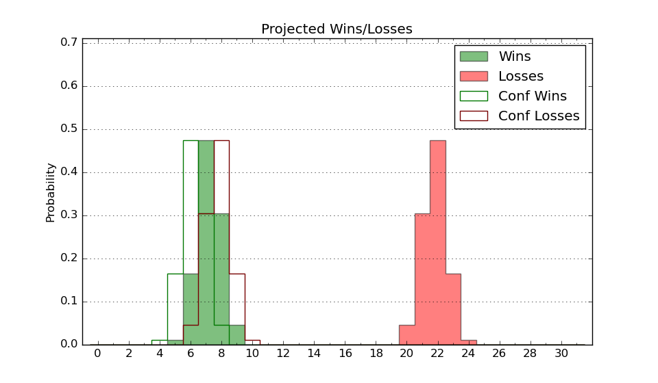

| Home | Game Probabilities | Conferences | Preseason Predictions | Odds Charts | NCAA Tournament |
| City: | Baltimore, Maryland | |
| Conference: | Mid-Eastern (5th)
| |
| Record: | 4-6 (Conf) 5-20 (Overall) | |
| Ratings: | Comp.: -11.5 (291st) Net: -11.5 (291st) Off: 92.0 (333rd) Def: 103.5 (192nd) SoR: 0.0 (168th) |
| Remaining | ||||||
|---|---|---|---|---|---|---|
| Date | Opponent | Win Prob | Pred. | |||
| 2/21 | @ Howard (212) | 19.7% | L 71-82 | |||
| 2/26 | @ Md Eastern Shore (300) | 36.6% | L 66-70 | |||
| 2/28 | Delaware St. (357) | 92.0% | W 79-61 | |||
| 3/3 | Morgan St. (320) | 74.1% | W 79-71 | |||
| Previous | Game Score | |||||
| Date | Opponent | Win Prob | Result | Off | Def | Net |
| 11/9 | @Loyola Chicago (31) | 2.9% | L 45-103 | -23.0 | -14.7 | -37.7 |
| 11/10 | @DePaul (97) | 6.9% | L 72-97 | 10.0 | -7.0 | 3.0 |
| 11/12 | @Rider (266) | 29.9% | L 69-81 | 10.2 | -26.7 | -16.5 |
| 11/13 | @Connecticut (15) | 1.6% | L 54-89 | -7.2 | 3.0 | -4.2 |
| 11/15 | @UNC Greensboro (151) | 13.5% | L 48-55 | -16.8 | 23.3 | 6.4 |
| 11/17 | Loyola MD (272) | 60.6% | W 71-49 | 1.0 | 41.4 | 42.5 |
| 11/19 | @Virginia (77) | 5.2% | L 52-68 | 0.6 | 5.7 | 6.3 |
| 11/22 | @Cleveland St. (188) | 17.2% | L 62-65 | -8.3 | 18.6 | 10.3 |
| 11/24 | @Canisius (262) | 29.1% | L 75-76 | 10.2 | -5.2 | 5.1 |
| 11/27 | @East Carolina (186) | 16.6% | L 68-70 | 13.1 | -0.1 | 13.0 |
| 12/1 | @St. Bonaventure (87) | 5.9% | L 81-93 | 22.6 | -14.2 | 8.5 |
| 12/3 | @Cornell (203) | 18.7% | L 77-92 | 8.7 | -17.4 | -8.7 |
| 12/8 | @George Washington (233) | 22.8% | L 62-75 | -1.9 | -6.2 | -8.1 |
| 12/11 | Towson (79) | 16.1% | L 75-89 | 9.2 | -15.6 | -6.4 |
| 12/14 | @Drexel (143) | 12.5% | L 69-76 | 6.7 | 4.7 | 11.4 |
| 1/8 | @South Carolina St. (318) | 43.8% | W 74-65 | 0.5 | 13.7 | 14.2 |
| 1/15 | @Morgan St. (320) | 45.6% | W 79-76 | -0.2 | 2.6 | 2.4 |
| 1/22 | @Norfolk St. (161) | 14.3% | L 77-84 | 10.1 | -0.5 | 9.6 |
| 1/24 | Howard (212) | 45.5% | W 83-81 | 22.3 | -15.6 | 6.8 |
| 1/29 | Md Eastern Shore (300) | 66.2% | L 61-64 | -19.9 | 7.9 | -12.1 |
| 2/2 | @Delaware St. (357) | 77.1% | W 59-57 | -14.6 | 7.0 | -7.5 |
| 2/5 | @North Carolina Central (281) | 32.6% | L 68-69 | 11.9 | -2.1 | 9.8 |
| 2/12 | South Carolina St. (318) | 72.6% | L 58-66 | -28.3 | 8.9 | -19.4 |
| 2/14 | North Carolina Central (281) | 62.3% | L 74-77 | 3.6 | -13.3 | -9.8 |
| 2/19 | Norfolk St. (161) | 36.2% | L 59-89 | -10.6 | -19.9 | -30.5 |
| Stats & Trends | |||||
|---|---|---|---|---|---|
| Current | Day | Week | Month | Season | |
| Composite | -11.5 | +0.1 | -1.4 | -2.4 | +0.6 |
| Comp Rank | 291 | -- | -9 | -17 | +33 |
| Net Efficiency | -11.5 | +0.1 | -1.5 | -2.7 | -- |
| Net Rank | 291 | -- | -10 | -24 | -- |
| Off Efficiency | 92.0 | +0.1 | -0.1 | -1.1 | -- |
| Off Rank | 333 | -- | -4 | -22 | -- |
| Def Efficiency | 103.5 | +0.0 | -1.4 | -1.6 | -- |
| Def Rank | 192 | +2 | -24 | -20 | -- |
| SoS Rank | 162 | +1 | -12 | -120 | -- |
| Exp. Wins | 7.2 | -0.0 | -1.2 | -2.4 | -3.0 |
| Exp. Conf Wins | 6.2 | -0.0 | -1.2 | -2.4 | -1.3 |
| Conf Champ Prob | 0.0 | -- | -0.4 | -14.5 | -10.1 |

| Advanced Stats | ||
|---|---|---|
| Stat | Value | Rank |
| Off Eff FG % | 0.447 | 329 |
| Off Ast Ratio | 0.112 | 338 |
| Off ORB% | 0.198 | 352 |
| Off TO Rate | 0.167 | 194 |
| Off FT Ratio | 0.314 | 158 |
| Def Eff FG % | 0.515 | 234 |
| Def Ast Ratio | 0.151 | 259 |
| Def ORB% | 0.314 | 304 |
| Def TO Rate | 0.170 | 131 |
| Def FT Ratio | 0.266 | 88 |